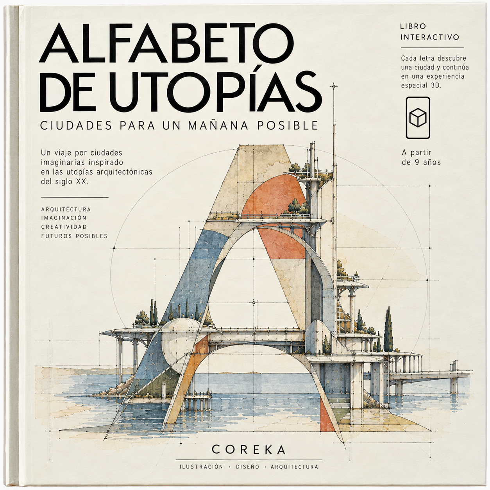
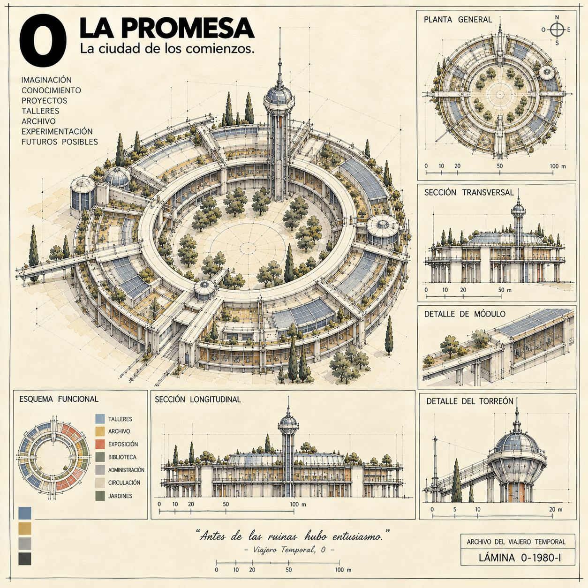
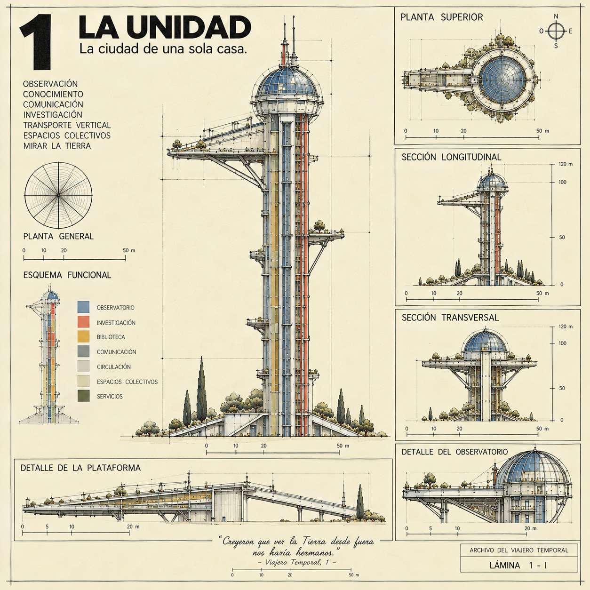
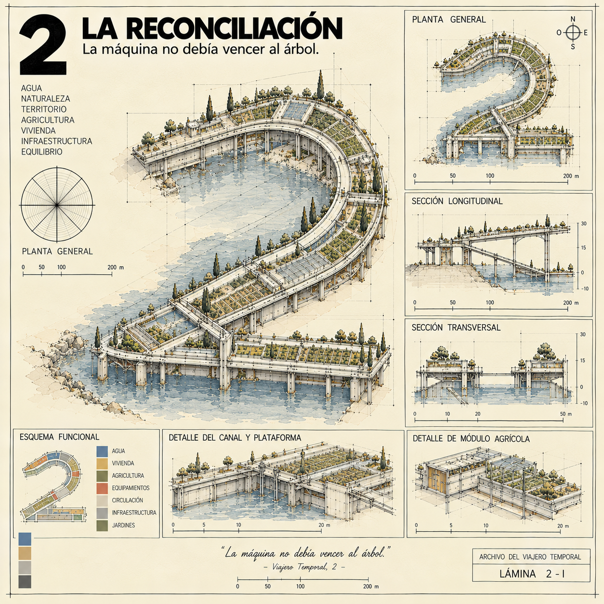
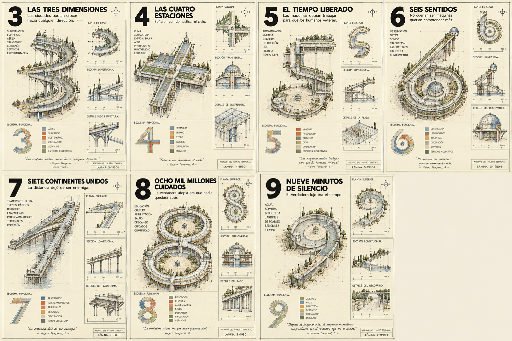

A · Aerotrópolis

A · Aerotrópolis · Vídeo Tripo de la ciudad representada en la lámina.

COREKA / CIUDADES IMAGINARIASCiudades para un mañana posible.
Un libro para explorar la creatividad espacial y arquitectónica a partir de los 9 años. Sus ciudades imaginarias, creadas por COREKA e inspiradas en las utopías arquitectónicas del siglo XX, convierten letras y números en nuevas maneras de imaginar cómo habitar.
A, B, C, D y G incluyen su lámina y un vídeo Tripo correspondiente. Las demás ciudades se muestran como miniaturas.
A · Aerotrópolis · Vídeo Tripo de la ciudad representada en la lámina.

B · Biópolis · Vídeo Tripo de la ciudad representada en la lámina.

C · Cápsula · Vídeo Tripo de la ciudad representada en la lámina.

D · Deltápolis · Vídeo Tripo de la ciudad representada en la lámina.


G · Geópolis · Vídeo Tripo de la ciudad representada en la lámina.






Los números 3–9 se presentan a partir de la lámina conjunta original.